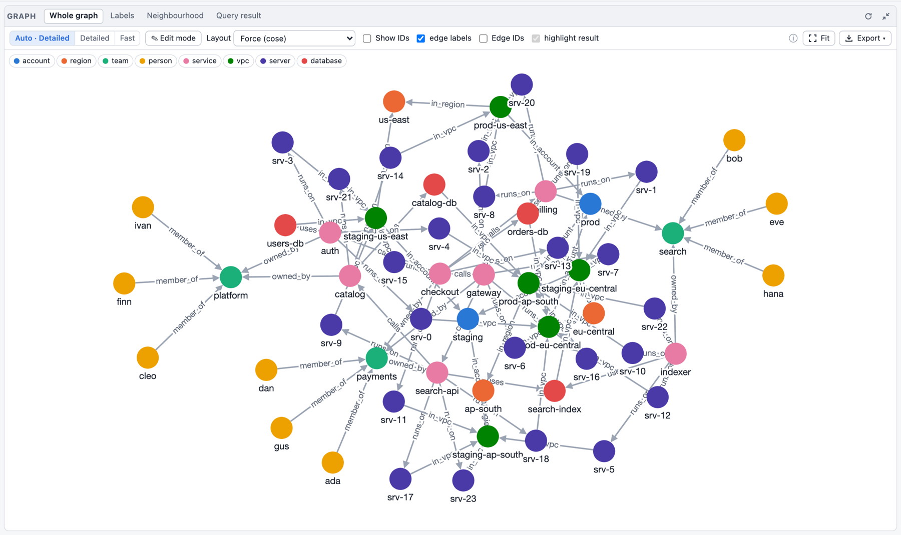
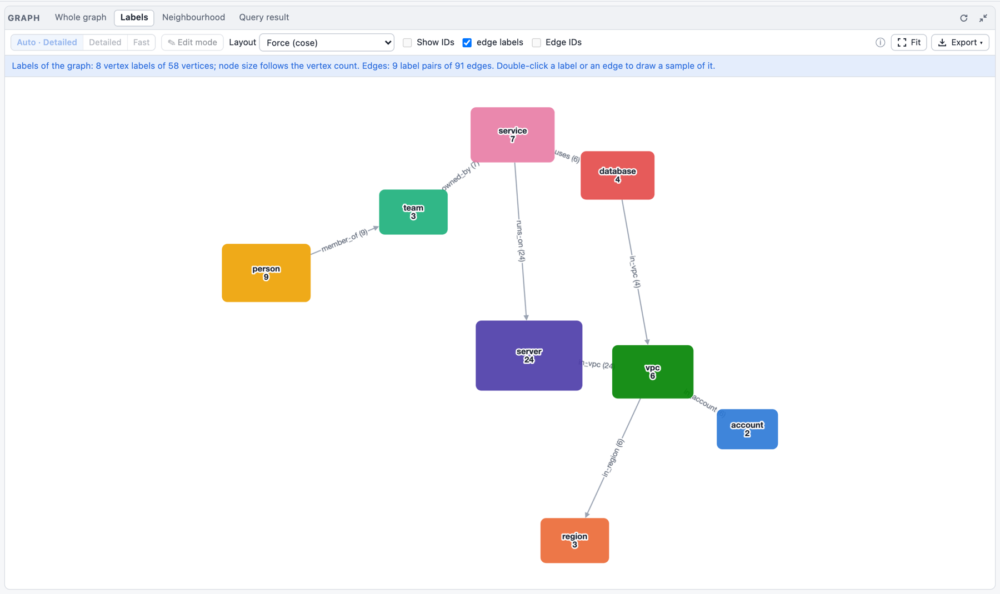
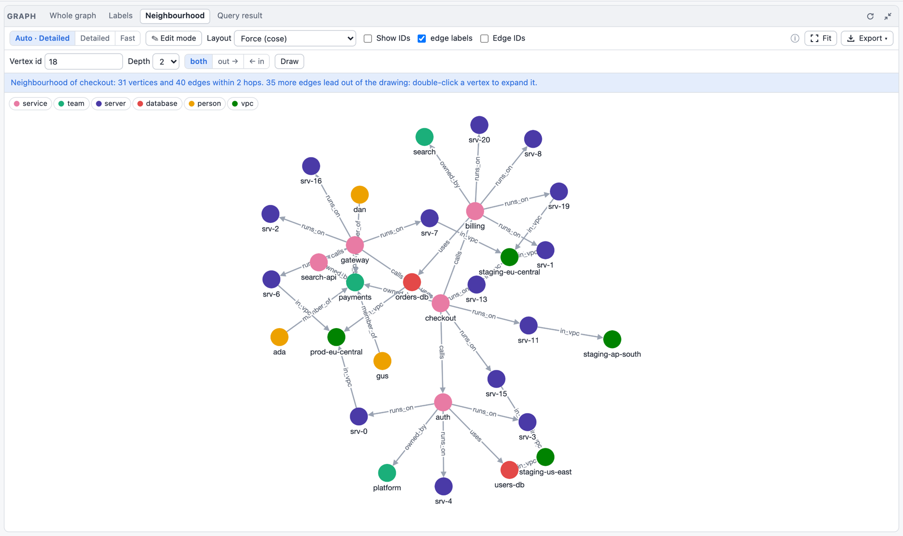
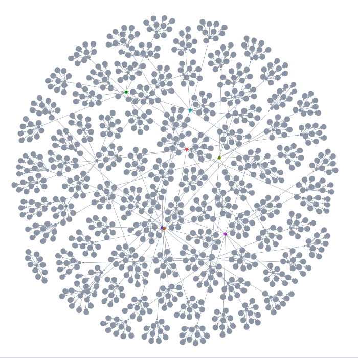

Web Playground
The playground is a single-page web app that runs Graphersal in the browser: the real engine,
compiled to WebAssembly (crates/graphersal-wasm), in a Web Worker. There is no server-side part;
any static file server can host it. Its source is playground/ in the repository; the developer
details (engine boundary, file layout, libraries) are in playground/README.md.
Build and run
rustup target add wasm32-unknown-unknown # one-time
cargo install --locked wasm-bindgen-cli --version 0.2.129 # one-time; must match the wasm-bindgen crate
playground/build.sh # builds playground/pkg/
python3 playground/serve.py 8000 # open http://localhost:8000/ (no browser caching)
wasm-opt (from binaryen) is optional; when it is installed, build.sh uses it to make the module
smaller. Without the build output the page explains how to build it.
The same UI also runs against the CLI as a local engine, without WebAssembly:
graphersal --graph <src> --server (DEV mode, unstable, local only; see
Dev Server and MCP). There the Query panel can also open an
AI Chat tab (EXPERIMENTAL, --ai FILE): an LLM agent that
answers questions by querying the served graph. In the WebAssembly playground that tab is read-only.
What it does
- Graphs: the empty graph, the TinkerPop "modern" graph, the generated ~110k element graph (the
CLI's
--graph large), a file tree sample, or a GraphSON (.json, TinkerPop'sg.io()format) or GraphML file from your disk (it stays in the browser). What a GraphSON import skips (dates, unsupported types) is shown in a notice. - Queries: the full DSL, both spellings, with completion from the engine's own function list
(each entry's tooltip shows its overloads, a one-line description and a runnable example). A
traversal without a terminal runs as
execute(), so one run gives the results and, with Profile on, the metrics; Memory adds the exact per-step memory figures (the module installs the counting allocator, so the source istracked). Results are shown as a table, JSON and the raw text the CLI prints, within the CLI's display limits (see Displaying Results). - Examples: the Query panel's Examples button (a click, or resting the pointer on it) opens
a panel over the editor with every example, in collapsible groups (GQL split by topic). Its search
field finds a plain text in titles and scripts, case-insensitive (
.order(lists every example that uses it, with the matching line);Up/Downmove,Enteropens,Escclears the search and then closes. Reopening returns to where you were and marks the example opened last, so the next one is right below it. - Query tabs: the Query panel holds several queries side by side. Each tab has its own text,
Profile/Memory toggles, last result and last profile; switching tabs shows that tab's results
without running anything. The graph is shared: when a run in one tab changes it, the other tabs'
results are marked "possibly stale" until they run again. An example from the Examples menu goes
into the active tab only when that tab is empty or still holds an unchanged example; otherwise it
opens in a new tab, so your own text is never overwritten. The tab menu also offers Duplicate
tab, Close other tabs and Run all tabs. The tabs (not their results) are kept in the browser;
the query history records every run with its tab's name. Shortcuts:
Ctrl/⌘+Enterruns the active tab (or its selection, see Run below),Ctrl/⌘+Shift+Enterruns all tabs,Alt+Nopens andAlt+Wcloses a tab,Alt+[/Alt+]switch to the previous / next tab andAlt+Shift+1…9to tab 1…8 or the last one (the browser keepsCtrl/⌘+T,Wand1…9for its own tabs). - GQL query tabs: a query tab is in Rhai (the Gremlin DSL, the default) or in
GQL. Open one with + ▸ GQL query (marked
GQLin the tab strip), or switch the tab with the Rhai / GQL switch in the Query panel's header; nothing is detected from the text. In a GQL tab you write the query itself,MATCH (p:person) WHERE p.age > $min RETURN p.name, with GQL highlighting and completion: the keywords that fit the position (afterMATCHa pattern'sWHERE,RETURNand the next clauses, afterRETURNAS,ORDER BY,LIMIT, ...), the GQL functions with a short description, the graph's labels after:(edge types inside[..]), the property keys aftern.(those ofn's labels), the variables the query binds, the parameters after$, and afterCALLthe saved queries written in GQL asfolder.name(Calling saved queries from GQL). Under the editor the Parameters field holds the parameter map as JSON,{"min": 30}(checked as you type; a fault names its line and column); + Add $parameters adds every$namethe query reads that the map lacks. Run, Run selection, Stop, Profile, the history and the results work as in a Rhai tab: the tab runsg.gql("<query>", #{min: 30}), and an error's GQLSTATUS stays in its message while the part of the query it names is underlined in the editor (Go to line jumps there). Switching a tab that holds exactly oneg.gql(`...`, #{..})call to GQL takes its query and its literal parameters out of it; switching back writes them as that call again; any other text is kept as it is. GQL examples of the Examples menu open as GQL tabs. Save as query… of a GQL tab saves a GQL query with its$parameters, typed and defaulted by the Parameters field. - Statistics, a tab of the Profile panel (next to Steps and Text), shows two sources
side by side: the graph's data (
g.statistics(): vertex and edge totals, the counts per vertex label, also as primary label, and per edge label; at most 50 labels per kind, largest first) with its memory footprint (g.memory_usage()), and the limits a query runs under: the host's presets (none in the playground; the dev server's--timeout,--max-*, ...) and the engine's defaults for the rest (see Resource Limits;g.with(..)changes them per query). While open it reloads after every run that changed the data. - Errors show the message, the step path of a runtime error (the same step ids as the profile),
the
help()advice, a "Go to line" for script errors, and the full diagnostic. - Graph, Schema, Profile panels draw the graph (capped), show and edit the schema (see The schema editor below; the drawings, a label graph and a Mermaid diagram, show at most 300 labels), and the optimized plan with timings, traverser counts, loop statistics, path recording and memory. The Graph panel draws the whole graph when it has at most 10 000 vertices and 20 000 edges (Settings), else its labels; it also draws the neighbourhood of a vertex and the last query result. Clicking a vertex or an edge shows its properties, fetched from the engine at that moment (the drawing itself carries only ids, labels and names; long texts and vectors are collapsed with an expand button, see Long values); double-clicking a vertex in the neighbourhood or the query result expands it by one hop from the engine (in the whole graph: selects it with its neighbours, again for one hop more), double-clicking empty space fits the drawing. Above 200 vertices the engine lays the drawing out (with progress and Stop) instead of the browser. See The graph drawing below for what the panel shows and its two drawing tiers.
- Run (or
Ctrl/⌘+Enter) runs the selected text when the editor has a selection, else the whole tab, so a script can be tried piece by piece. The button then reads Run selection, and the status bar and the Results header say "selection (N lines)". A selection of only whitespace runs the whole tab; with several selections (Alt+drag) only the main one runs. Everything else is a normal run: one unit (committed only when it succeeds), the history records the text that ran, Profile and Memory apply, and an error's "Go to line" points into the full text of the tab. Run all tabs always runs whole tabs. - Stop (next to Run) ends a long query: the engine is restarted and the graph restored as it was last loaded (sample or file) or last saved. Changes made after that point are lost, and so is the history of the store in memory (it starts over from that state). While no query runs but the graph drawing is being laid out, Stop ends only the layout: the drawing keeps the positions reached so far and nothing is restarted.
- Save ▾ (top bar; the start page has the same entries as buttons) downloads ONE file per
entry: the graph data as GraphSON 3.0 (
graphersal-graph-YYYYMMDD-HHMMSS.json) or GraphML (.graphml), the schema (graphersal-schema-YYYYMMDD-HHMMSS.json; neither data format carries it, see UUID Values), the saved queries, or a snapshot (.gsnap) with data, schema and saved queries in one file. One file per click, because browsers block or drop a second download started by the same click. To load both back, choose both in Load from file on the start page: the graph file and, in the dialog's optional second field, the schema file (JSON). The schema is set on the new, empty graph first and the data is imported against it as one unit, so the elements, ids, labels, properties and the schema come back; in modeopenorcloseda violation fails the load with the error and nothing changes. Load from file always starts without the previous graph's schema: a graph file loaded without a schema file has no schema (a previous graph's schema has nothing to do with an unrelated file). Dropping ONE file on the card loads it without a schema; dropping a graph file together with its.jsonschema pairs them when that is unambiguous (the graph file is GraphML,.jsonlor.graphson; two.jsonfiles are refused, choose them in the dialog). A snapshot (.gsnap) brings its own schema and takes no schema file. GraphSON keeps every value type (uuid, lists, maps) by itself; GraphML gets them back from the schema's declarations, and Save warns about values that come back as strings without one (an undeclareduuid, lists and maps, a property with different types on different labels). - Load schema applies a JSON file in the schema format
(
set_schema) to the current graph. In modeopenorclosedthe existing data is validated first; on violations nothing changes and the error is shown. It changes only the current graph: a graph loaded from a file afterwards does not keep it (give the schema file in Load from file instead).
Scripts run without Rhai resource limits and without a default timeout, as in the CLI: the page is your own local front end, and Stop ends a runaway query or loop. Every run starts with a fresh script scope; the graph keeps the changes queries make until you load another one.
A run is all-or-nothing: the whole script is one unit of work, and a run that shows an error leaves the graph as it was before the run (see Transactions). Scripts may do everything except file access, which the browser does not have (see Permissions).
Links to a query
A link can open the playground with a query in the editor, and run it, on a sample graph or on a small graph the link carries itself:
https://graphersal.github.io/play/#/play?graph=modern&q=g.v().has_label(%22person%22).values(%22name%22)&run=1
https://graphersal.github.io/play/#/play?v=1&data=xZWxboMwEIb3PoZnFIFtSMOUoR36Al...&q=g.v().count()&run=1
https://graphersal.github.io/play/#/play?graph=modern&q=MATCH%20(p%3Aperson)%20WHERE%20p.age%20%3E%20%24min%20RETURN%20p.name&lang=gql¶ms=%7B%22min%22%3A30%7D&run=1
| Parameter | Meaning |
|---|---|
graph | the sample graph: modern (the default), empty, large, tree |
data | instead of graph: the graph itself, as GraphSON 3.0 compressed with deflate and written as base64url |
schema | with data only: the graph's schema (the schema format), encoded the same way |
v | the format of data and schema; 1 (the default) is the only one so far |
q | the query, percent-encoded (encodeURIComponent; a literal + must be %2B) |
lang | gql: q is a plain GQL query and opens in a GQL tab (absent: a Rhai script) |
params | with lang=gql: the GQL tab's Parameters field, a JSON map, percent-encoded (optional) |
title | the name of the query tab (optional) |
run | 1 runs the query once it is in the editor |
The parameters are in the fragment (after #), so the browser never sends them to a server: a
graph in a link goes only where you paste the link. The query goes into a new tab when the current
one holds your own text. When a graph is already open in the page, the playground asks before it
replaces it; declined, the query is only put into the editor. The address then goes back to
#/play, so a reload does not apply the link again. With the dev server a link only opens the
query: the served graph is your own data, so nothing is replaced and nothing runs. Parameters the
playground does not know are ignored, so later additions keep older links working.
Share a query with its graph
The green Share link button in the top bar (also Share as link… in the Query panel's tab menu) makes such a link for the active tab: its query and the graph. A sample graph that has not changed goes into the link by its name; any other graph goes into the link itself, with its schema. Saved queries and compression rules are not included. Copy the link into a bug report or a message; whoever opens it gets the same graph and query in their own browser.
Only small graphs fit into a link. A link is at most 60,000 characters, so that it fits into the text of an issue: roughly a graph of a thousand elements, fewer with long property values. For a bug report, reduce the graph to the few vertices and edges that reproduce the problem and leave out everything else; a minimal graph is also the fastest to understand. For a larger graph, save it with Save ▸ Data (GraphSON) and attach the file instead.
The book uses these links: every example that runs on a sample graph has a ▶ run button next to each of its queries (or a Run in the playground link under a block with one query).
The graph drawing
What the panel shows
Drawing "the first 1000 vertices" of a large graph shows an arbitrary slice of it. The Graph panel's tabs choose a meaningful part instead:
- Whole graph: the graph itself when it has at most the vertex and edge limits of the settings (10 000 vertices and 20 000 edges by default). A larger graph shows its labels (below) with a note saying how large it is; Draw the first N vertices anyway draws that slice (said to be one), Double the limits raises them.
- Labels: the label overview. Each vertex label is a node sized by its number of vertices,
each edge is a label pair (
person –created→ software) with its number of edges. The 40 largest labels are drawn, the others form one "other labels" node; the 200 largest pairs are drawn and the note counts the rest. The counts come from the graph's statistics and one pass over the edges, so they are exact (for graphs with more than five million edges, the pairs are counted over the first five million and the note says so). Double-click a label to draw a sample of its vertices with the edges between them, double-click an edge for a sample of that label pair. A sample is the first matching elements in storage order (at most 1000 vertices), not a random choice, and its note says how many of how many it shows. - Neighbourhood: a vertex and its neighbours, fetched from the engine. Type a vertex id (or click Neighbourhood in a vertex's properties, or the ⌖ button of a vertex row in the Results table) and choose the Depth (1 = the direct neighbours, 2 = their neighbours too, up to 5) and the direction: both, out → (the vertices it points to) or ← in (the vertices pointing to it); changing either redraws from the same vertex. Double-click a vertex to expand it by one hop (along the chosen direction): its neighbours are added, everything already drawn stays where it is and the new vertices are placed around it. The note says how many edges still lead out of the drawing, and when the limits (Settings) cut the neighbourhood, how many vertices and edges within that depth were left out.
- Query result: the vertices, edges and paths the last query returned, with the edges between them. At most 50 000 vertices + edges by default (Result graph in the settings, up to 200 000; the result's data itself is never cut); the note says when a result has more. Double-click a vertex of the result to expand it by one hop from the engine, like in a neighbourhood: the drawing continues as a neighbourhood ("the query result, expanded"), the result's vertices stay in place, and further double clicks keep expanding. A result with more vertices than the drawing limit is not expanded (the note says so; open a vertex's neighbourhood instead).
Result highlight. In the Whole graph tab the elements the active tab's last query result
refers to are highlighted and everything else is faded (the highlight result checkbox turns
this off for good). ✕ Clear highlight in the toolbar, shown while a highlight is active, or
Esc on the drawing (click it first) shows the graph normally again; Esc also clears a
double-click selection. Clearing applies to that result only: the next query result highlights
again, and switching to another query tab shows that tab's result highlighted, while the tab you
cleared stays cleared. Both tiers behave the same.
Long values. In an element's details (click a vertex or an edge) and in the Results table, a
text longer than 200 characters or with more than 3 lines is cut to its start and "…", and a
vector (a list of 16 or more numbers) shows as vector[384] [0.12, -0.03, 0.5, 1, …]. expand
shows the full value, collapse the short form again; the copy button next to it in the
element's details copies the full value. Collapse values above in the Settings sets the
number of characters (20 to 100 000), 0 shows every value in full. A vector in the Results table
keeps its own disclosure (vector[768 f32], the JSON tab has every value).
Editing properties
Click a vertex or an edge for its properties, then the pencil next to the close button: a
dialog edits them. Each property is one line with its name, its type (string, int64,
float64, boolean, uuid, array, object, null), its value and its buttons, in columns
aligned across the rows (in a narrow window a property takes two lines); a changed or invalid
property is marked at its left edge. The last line adds a property: name, type and value, then
+ Add or Enter. Remove (with undo) and rename properties. Arrays and objects are edited as a
tree below their line (expand, collapse, add and remove items and keys); the { } button edits
any value as JSON, Edit as JSON (next to Save) the whole element. A string always stays a
string, whatever it looks like, until you pick another type. Long or multi-line strings, and every
string a compression rule covers, get a large text box below their
line (⤢ opens one for any string).
When the graph has a schema, the dialog follows it: the properties of the
element's label(s) are listed (also the ones not set yet), required ones are marked with *, the
type, bounds and description are shown under each line, and an enum is a menu. Every change is
checked by the engine before you save; its errors appear next to their fields and Save stays
disabled until they are fixed. Saving writes all changes as one commit: if the engine still refuses
(for example the schema changed meanwhile), nothing is applied and the dialog stays open with the
error. Ids and labels are shown but not edited. The pencil is disabled, with the reason as its
tooltip, while a query runs and when the graph cannot be written: a read-only view of a past state
(Store menu), a backup, or a store in maintenance mode.
Edit mode
The Edit mode switch in the Graph panel's toolbar turns the mouse into an editor of the graph:
- Add a vertex: double-click empty space. A dialog asks for the label (a menu of the labels the
schema declares and the graph already has; any label can be typed unless the schema is
closed), an optional id (empty: automatic) and the properties, laid out by the label's schema (required ones are already there,*). The vertex appears where you double-clicked. - Add an edge: drag from one vertex to another (a dashed line follows the pointer; back onto
the start vertex after leaving it makes a loop). The label menu offers the schema's edge labels
whose
connectionsallow the two vertices (*matches any label, any label of a multi-label vertex counts), then the graph's other edge labels; with aclosedschema only the allowed ones. - Delete: select a vertex or an edge (click it) and press Delete, or use the bin in its card. A confirmation says how many edges go with a vertex.
- Edit properties: double-click an element (or use the pencil), as above.
Every draft is checked by the engine with a dry run, its errors shown at their fields; each change is one commit. The drawing changes in place: the other vertices keep their positions and no layout runs. In edit mode vertices cannot be dragged around (a drag draws an edge). The Fast tier edits and deletes but adds nothing with the mouse (switch to Detailed to add). Edit mode is off, with the reason as its tooltip, in the Labels overview and when the graph cannot be written (a read-only view of a past state, a backup, a store in maintenance mode or frozen by damage).
A small cloud inventory (58 vertices, 91 edges) in the three views:



Tiers
The Graph panel draws in one of two tiers:
| Detailed | Fast | |
|---|---|---|
| Engine | Cytoscape.js (Canvas 2D) | sigma.js + graphology (WebGL) |
| Chosen by Auto | below 2000 vertices + edges | from 2000 (back to Detailed below 1600) |
| Vertex labels | always (from 2000 elements only when large enough to read) | as you zoom in |
| Edge labels | yes | only on hover: hovering a vertex highlights its neighbours and labels its edges |
| Edges | curved, loops, arrows | straight, arrows, no loops |
| Layouts | Force, Circle, Concentric, Tree, Grid | Force (the engine's), Circle, Grid |
| Export | PNG | PNG |
| Pans smoothly up to | about 2000 elements | 100 000 elements (the largest measured) |
The switch Auto / Detailed / Fast in the panel's toolbar (also in Settings) chooses the tier; Auto decides by size, with a margin so a drawing does not flip back and forth around the threshold. Switching keeps the drawing's positions. In the Fast tier a banner says what it lacks, and the controls it cannot honour (edge labels, the Concentric and Tree layouts) are disabled with the reason as tooltip. The schema drawing and the label overview always use the Detailed tier.
Drill down: in the Fast tier, click a vertex (or double-click it to select its neighbours, again for one hop more) and choose Open in Detailed: that neighbourhood is drawn in the Detailed tier, with every label and style; Back to the whole drawing returns.
A drawing waits for an explicit Draw it only where it can still make the page slow: Detailed forced above 5000 vertices + edges, the Fast tier above 200 000. A browser without WebGL (or where the Fast tier's scripts cannot load) draws in the Detailed tier, at most 10 000 vertices + edges, and says so. The Fast tier's scripts are loaded only the first time a drawing needs them.
The Fast tier draws the first 10 000 vertices of the generated 110k-element graph:

Saved queries
Saved queries are named, parameterized queries stored in the graph. The top bar's Catalog ▾ ▸ Saved queries manager lists them by folder (the description and the signature) with a badge each: R/O (it only reads), R/W (it changes data; the tooltip lists what, as inferred from its body), R/O ⚠ (read-only, its writing steps are denied until it is saved again) or unavailable (it cannot run; the tooltip says why), and its language, Rhai or GQL (the tooltip names the dialect). It manages them on the WebAssembly playground and on the dev server alike:
- New saved query… / ✎ opens the editor: name, folder, description, the language, the
parameter list and the body. Each parameter has a name, a type (
string,integer,number,boolean,uuid,arrayof one of these,object, or a schema written as JSON), constraints (minimum and maximum, length, pattern, allowed values), a default (empty: the parameter is required) and a description; ↑/↓ reorder and ✕ removes one. The body is what goes inside the function, in the code editor with the DSL completion; the linefn name(a, b) {above it follows the parameter list, so a parameter is added or renamed in one place. Save stores it (a rename replaces the old name in the same commit); what the engine refuses is shown next to its field (a bad name or folder, a parameter whose default breaks its schema, a body that does not compile). Moving a query to another folder is changing its folder here. Delete… asks first. - The Rhai / GQL switch picks the language. A GQL query
is the whole query text, highlighted as GQL, with no function line around it; every
$nameit reads must be a declared parameter and every parameter must be read (+ Add $parameters of the query declares the missing ones as strings). Switching ag.gql(`...`)body to GQL keeps its query; switching a GQL query to Rhai wraps it intog.gql(`...`, #{p: p}). - Save as query… in a query tab's ⋯ menu opens the editor on the tab's text. A GQL tab
becomes a GQL query with every
$nameas a parameter, typed and defaulted by its Parameters field. A Rhai tab holding exactly oneg.gql(`...`)call (as Wrap as GQL writes it) becomes a GQL query of the inner text the same way, typed by the values the tab passes in its#{..}map; any other tab becomes a Rhai query whose body is the tab's text. - The body editor completes the declared parameters: in a Rhai body their names (the function's
arguments), shown with their type above the DSL's own names; in a GQL query
$nameafter$. A parameter added, renamed or removed in the list is offered at once. - Clicking a query opens its run form, built from the parameter schemas: a number field with
its minimum and maximum, a list for allowed values, a checkbox for a boolean, UUID text that is
checked, one line per item for a list; defaults are prefilled and required fields marked with
*, the descriptions are hints. Run writes the call, for exampleg.query("older_than", #{age: 29, label: "person"}), into a query tab and runs it there: it is visible, editable and in the history like any other query. The form remembers the last values per query (in the browser). An empty field takes the parameter's default. - In the editor,
g.query("completes the names of the saved queries, grouped by folder. - Saved queries travel in the catalog file, like the schema: Catalog ▾ ▸ Save catalog
(.json) (
graphersal-catalog-YYYYMMDD-HHMMSS.json, also Save catalog on the start page) holds the whole catalog, saved queries, compression rules and property indexes; Catalog ▾ ▸ Load catalog… (or Load catalog on the start page) adds the file's definitions to the current graph (one of the same kind and name is replaced; a compression rule compresses its values at once). A graph loaded from a GraphSON or GraphML file afterwards keeps them; a sample graph starts without any, a snapshot (.gsnap) brings its own. Stop keeps the catalog the page loaded or edited (like the schema); definitions a script made since the last load or save are gone with the rest of the run's changes.
The Catalog
The top bar's Catalog ▾ lists what the graph stores besides its data and schema, each kind with its count, and opens its manager:
- Saved queries: the queries by folder with Run…, Edit…, Delete and New saved query… (the editor and run form described above).
- Compression: the compression rules with their stats (compressed values, plain and stored size, ratio, saving, dictionary size), Edit…, Recompress and Drop, and New rule…: a form with name, element (vertex or edge), label (the graph's labels are suggested), path, minimum size and dictionary; the engine's errors show next to their field. Saving re-encodes the label's values at once.
- Property indexes: the property indexes with their stats (entries,
distinct values, elements per value, memory; not served on a storage that keeps the
definition but serves no index) and Drop (after a confirmation), and New index…: a form
with element (vertex or edge), label (the graph's labels are suggested), key and an optional
name (the default
<label>_<key>is shown as you type); the engine's errors show next to their field. Creating builds the index from the data at once.
The same dropdown holds Save catalog (.json) and Load catalog…. The Statistics tab of the Profile panel shows the compressed strings and the dictionaries, and the property indexes' memory, in its memory part when there are any.
A catalog change is a commit: in the store in memory it is part of the history, and on the dev server another browser tab or an AI agent sees it through the change feed.
The store in memory
Every graph you load is kept as a Store in memory: every run that changes the graph is a commit,
and the Store menu in the top bar checkpoints, marks, opens past states read-only, forks and
rolls back. Everything in memory is lost on page reload: download a .gsnap to keep a state.
The details are on the page The Store in the Playground.
The schema editor
The Schema panel's Tables tab shows the schema (the stored one, or, without one, the schema
inferred from the data; the badge says which) as nested tables on one page: a table per vertex and
edge label, one row per property with its type, required, nullable and a compact constraint
column (0..150, length 1..80, ^\d{5}$, <= 10, one of a, b). A nested object is a table
inside its row; arrays show as array of T (an array of objects gets the item table); objects
deeper than the first level start collapsed as object {n fields}. The format is described in
Schemas.
Everything is edited in place, and every edit changes a draft, never the stored schema:
- the type (a dropdown;
uuidisstring+format: "uuid",anyis{}; a union of several kinds is edited in the JSON tab), required, nullable, the property name, a+ propertyrow in every table, and a detail form per property (open it from the constraint column) with the constraints of its type,enum,const,additionalPropertiesfor objects, and the annotationstitle,description,default,examples,$comment,deprecated; - labels: add, rename (a renamed vertex label is renamed in the edge connections too), remove; the
connections of an edge label with from/to dropdowns (
*is any label; no connection allows every pair);additionalPropertiesper label; - the
mode(toolbar) andmeta(free JSON); - the JSON tab is the same draft as text, synchronised both ways: text that parses becomes the draft, invalid JSON is shown inline while the tables keep the last valid state;
- Infer from data starts a draft from
infer_schema(); Load… reads aschema.jsoninto the draft; Download saves what the editor shows asschema.json; - Freeze as open / Freeze as closed (offered while the graph stores no enforcing schema and
no draft is being edited) store the inferred schema with that mode in one step,
set_schema(infer_schema(), mode): see Freeze the structure you have. It always applies, exceptclosedwith vertices or edges without a label: then nothing changes and the report is shown.
A property's default is stored when a vertex or edge is created without it (see
Defaults on create), never filled into existing
elements; the editor's backfill script uses it as the value it writes into those.
With a draft, the toolbar offers the review and the apply:
- What changes lists the changes from the stored schema (
diff_schema), each marked backward compatible or not (compatible: it only adds or relaxes, so data and clients written against the old schema keep working; adding an optional property is compatible, removing one is not; see the rule set). Existing data that conflicts is what the next step finds. - Check against data validates the existing data against the draft (
validate_schema_patch; nothing changes) and lists the violations grouped by rule. A click on a group opens a new query tab that runs a query showing the offending elements (g.V().hasLabel("person").not(__.has("email"))for a missing required key, the sample ids for a constraint violation). - Apply stores the draft with
patch_schema(a JSON Merge Patch computed from the stored schema; one unit, all or nothing). It checks first and is blocked while the data violates the draft. To make a key required on existing data, Open a backfill script writes the recipe as one run: the draft with modenone, aproperty(key, value)for every element that lacks the key (the draft'sdefault, or a placeholder to edit), then the draft itself; a playground run is one unit, so nothing is kept unless all of it succeeds.
Discard drops the draft. A draft that sets a member to null ("default": null) cannot be a
merge patch; Apply then uses set_schema with the whole draft. The editor talks to the engine only
through the seven schema methods, the same as in Rust, the DSL and Python. The Graph and Mermaid
tabs draw the stored (or inferred) schema, not the draft.
When the panel infers. Inferring a schema reads the whole graph, so the panel does it only when it is first shown (expanded) and when you press its refresh button, never after every change of the graph. A stored schema is read again after every change (a schema set or changed by a query shows at once). Without one, a change (a query that writes, the property editor, a change made in another tab or by an AI agent) keeps the schema inferred last on screen and adds the badge may be outdated - refresh next to the refresh button; press refresh to infer it again. The same badge appears when the stored schema is dropped. Loading another graph, opening a read-only view of the Store, going back to the live graph, rolling back or switching databases replaces the graph: the panel infers once for it, right away if it is shown, else when you open it. The WebAssembly playground and the dev server behave the same.
If the playground freezes
Open the playground's address with /reset added (for example http://localhost:8000/reset/).
That page loads nothing of the playground itself: it removes the playground's saved state from the
browser (settings, panel layout, theme, query tabs, view choices; the query history is kept) and
then opens the playground with the Modern sample graph. Use it when a saved state makes the page
hang again after every reload, for example a huge drawing that is restored on start.